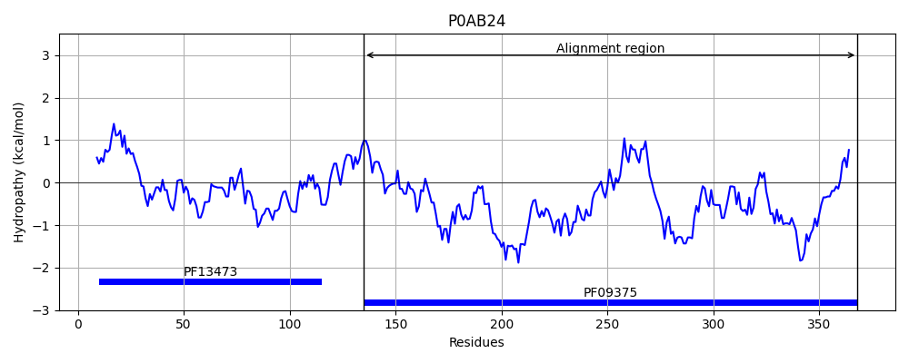

Hit Accession: P0AB24
Hit TCID: 2.A.108.2.3
Hit Description: gnl|BL_ORD_ID|8691 gnl|TC-DB|P0AB24|2.A.108.2.3 UPF0409 protein ycdO - Escherichia coli (strain K12).
Mach Len: 236
e:0.000000
Query TMS Count : 0
Hit TMS Count: 0
TMS-Overlap Score: 0.000000
Predicted Substrates:CHEBI:34754;iron(2+)
BLAST Alignment:
Score: 465 , Bit scores: 183 bits, E-value: 9.5e-56, Alignment length: 236, Percentage identity: 40
Query: 44 ATKAYDKYTDEQLNEFLKGTEKFVKAIENNDMAQAKALYPKVRMYYERSEPVAEAFGDLDPKIDARLADMKEEKKEKEWSGYHKIEKALYEDKKIDDVTKKDAQQLLKDAKELHAKADTLDITPKLMLQGSVDLLNEVATSKITGEEEIYSHTDLYDFKANVEGAQKIYDLFKPILEKKDKKLSDDIQMNFDKVNQLLDKYKDNNGGYESFEKVSKKDRKAFADAVNALGEPLSKM 279
A AY Y + + + T+ F AI+ D+ +AKALY R +YER EP+AE F DLD IDAR D +++ + +++G+H++EKAL+ D + + A+QL D +L + L P ++ G+ L+ EVA SKI+GEE+ YSHTDL+DF+ANVEG+QKI DL +P L+K + +L + NF KV+ +L KY+ + G+E+++K++ DR A + AL E L+++
Sbjct: 135 AITAYKAYVMAETTQLVTDTKAFTDAIKAGDIEKAKALYAPTRQHYERIEPIAELFSDLDGSIDAREDDYEQKAADPKFTGFHRLEKALFGDNTTKGMDQY-AEQLYTDVVDLQKRISELAFPPSKVVGGAAGLIEEVAASKISGEEDRYSHTDLWDFQANVEGSQKIVDLLRPQLQKANPELLAKVDANFKKVDTILAKYRTKD-GFETYDKLTDADRNALKGPITALAEDLAQL 368 | Protein Hydropathy Plots: |
|---|
|  |
Pairwise Alignment-Hydropathy Plot:
|
|---|
|